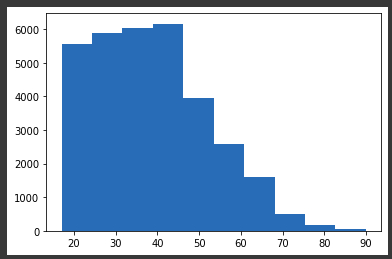
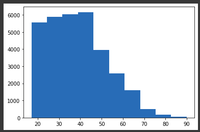

Inteligência Artificial
Inteligência Artificial e Machine Learning
Resumo em construção
Github do projetoGoogle Colab
BD Risco de Crédito
BD Censo
Introdução
Inteligência artificial é a área da Ciência da Computação responsável pelo desenvolvimento de sistemas que simulem a capacidade humana de resolver problemas.

Exemplos de aplicações com Machine Learning:
- Sistemas Especialistas (Baseado em profissionais especialistas humanos)
- Sistema de Recomendação
- Reconhecimento Facial (Visão computacional)
- Reconhecimento de Movimentos
- Reconhecimento de Sons / Fala (Processamento de linguagem natural)
- Robótica e Automação
- Realidade Virtual
Terminologias:
- Inteligência Artificial: Termo geral, área da Ciência da Computação responsável pelo desenvolvimento de sistemas que simulem a capacidade humana de resolver problemas
- Inteligência Computacional: Redes neurais, computação evolucionária, lógica nebulosa (fuzzy)
- Machine Learning (Aprendizado de Máquina): Métodos matemáticos para treinar algoritmos
- Data Mining (Mineração de Dados): Extrair conhecimentos de base de dados, usando métodos de Machine Learning
- Redes Neurais: Tipo de Machine Learning, como um algoritmo
- Deep Learning (Aprendizado Profundo): Muito mais dados e processadores mais potentes (Rede Neural com muitas camadas)
- Big Data: Imenso volume de dados (Necessário algoritmos de Machine Learning para realizar o tratamento dos dados)
- Ciência de Dados: Exploração e análise de dados, envolve Ciência da Computação + Estatística, além de Machine Learning
Machine Learning
Métodos Preditivos: Previsão resultante de conjunto de atributos.
- Classificação: Dividir atributos por determinadas classes (Rótulos)
- Exemplo: Pessoas que gostam de Rock / Pessoas que não gostam de Rock
- Regressão: Previsão realizada através da análise de valores numéricos, como dados históricos
- Exemplo: Com base na temperatura, umidade e pressão do ar, ocorre-se a previsão da velocidade do vento
Métodos Descritivos:
- Associação: Dados em comum
- Exemplo: Maior histórico de compra de carne e cerveja nos finais de semana
- Agrupamento: Agrupar dados em comum (Cria grupos)
- Exemplo: Com base de dados de histórico de mercado, agrupar clientes que compram jogos eletrônicos
- Detecção de Desvios (Outliers): Detectar "anomalias" em grupos de dados
- Exemplo: Detectar doping em atletas (Atleta desempenhando além do normal)
- Descoberta de Padrões Sequenciais: Detectar "relações" entre grupos de dados
- Exemplo: Leitor de Harry Potter tende a gostar de livros de Harry Potter
- Sumarização: Abstrair dados de um grupo maior, de acordo com atributos solicitados
- Exemplo: Em base de dados de clientes, resgatar somente pessoas maiores de 50 anos, de origem japonesa
Tipos de Machine Learning:
- Supervisonada:
- Classificação
- Regressão
- Não Supervisonada:
- Associação
- Agrupamento
- Detecção de Desvios
- Padrões Sequenciais
- Sumarização
- Reforço
Aprendizagem Supervisionada:
Contexto: Classificar se uma imagem refere-se ao Homer Simpson, ou ao Bart Simpson.
Fase 1: Imagens -> Extração de características (Montagem da base de dados) -> Algoritmo de aprendizagem (Feito por supervisor) = Modelo Aprendido
* Extração de Características: No Homer, a cabeça é arredondada, enquanto no Bart a cabeça não é arredondada, etc.
* Algoritmo de aprendizagem: Supervisor submete imagens do Homer, informando características do Homer, também imagens do Bart, informando características do Bart. Dessa forma, será realizada uma padronização das classes Homer e Bart, de acordo com suas características personalizadas.
Fase 2: Imagem desconhecida -> Extração de características -> Submissão ao modelo aprendido = Modelo dirá que a imagem é da classe Bart
Aprendizagem Não Supervisionada:
Analisa automaticamente os dados (Associação, Agrupamento), ou seja, não há supervisão nem treinamento manual prévio, necessitando somente de análise para determinar o significado dos padrões encontrados (Se o padrão resultante é, de fato, pertinente). Nessa aprendizagem não é feita a predição dos dados, e sim somente a descrição (Descritiva).
Exemplo: Pessoa que compra X também compra Y. Portanto, toda pessoa que comprará X também comprará Y
Aprendizagem por Reforço:
Aprender com as interações com o ambiente (causa e efeito), aprendendo com sua própria experiência. Aprendizagem muito comum utilizada em ambientes SMA (Sistema Multiagente - Onde há vários agentes interagindo no ambiente).
Exemplo: Robô automatizado bate em parede e danifica-se. Dessa forma, concluirá que deve-se evitar bater em parede
Classificação:
Levando em consideração o exemplo de análise de risco de crédito. Cada registro pertence a uma classe e possui um conjunto de atributos previsores. Na aprendizagem supervisionada, o valor do atributo meta sempre é conhecido. Com uma base de dados como o exemplo da tabela abaixo, é submetido ao treinamento de algoritmos de Machine Learning, para então prever o risco automaticamente.
- Atributos Previsores: Histórico de crédito (Bom, ruim ou desconhecido), dívida (Baixa ou alta), garantias (Nenhuma ou adequada), renda anual (Menor que 15 mil, entre 15 mil e 35 mil, maior que 35 mil) - Variáveis Independentes
- Atributos Meta / Classe: Risco (Baixo, moderado ou alto) - Variáveis Dependentes
| Histórico de crédito | Dívida | Garantias | Renda anual | Risco |
|---|---|---|---|---|
| Ruim | Alta | Nenhuma | Menos de 15 mil | Alto |
| Desconhecido | Baixo | Nenhuma | Entre 15 mil e 35 mil | Moderado |
| Desconhecido | Baixo | Adequada | Maior que 35 mil | Baixo |
Representação da Classificação (Método Indutivo):
- Fase 1: Conjunto de exemplos (Atributos previsores + Atributos meta) -> Sistema de aprendizado = Classificador
- Fase 2: Caso a ser classificado (Atributo meta não conhecido) -> Classificador = Decisão
Exemplo (Indução com aprendizagem supervisionada):
- Fase 1: Homer e Bart -> Extração de características -> Algoritmo de aprendizagem e Supervisor = Modelo aprendido
- Fase 2: Bart com Skate -> Extração de características -> Modelo aprendido = Bart
Pré-processamento de dados:
Tipos de variáveis
- Numéricas: Possuem valor numérico
- Contínua: Números reais (Temperatura, altura, peso, salário, etc - 44.2)
- Discreta: Conjnto de valores finito, valores inteiros (Contagem de algo - 15)
- Categóricas: Representam categorias, possuem valor String
- Nominal: Dados não mensuráveis (Sem ordenação: cor dos olhos e gênero, id, nome, etc - "azul")
- Ordinal: Categorizado sob ordenação (Tamanho: P, M e G)
* A conversão de variável categórica para discreta geralmente ocorre quando a categoria básica representa 1, categoria moderada representa 2 e categoria avançada representa 3.
1. Importar libraries:
Importar libraries plotly (Geração de gráficos dinâmicos), pandas (Gerenciamento de arquivos CSV), numpy, seaborn e matplotlib.pyplot (Visualização de gráficos), plotly.express (Chamará a library plotly).
!pip install plotly --upgrade
import pandas as pd
import numpy as np
import seaborn as sns
import matplotlib.pyplot as plt
import plotly.express as px
Base de Dados (Risco de Crédito)
Objetivo da IA é dizer se a pessoa, de acordo com suas condições, pagará ou não o crédito (default 0 ou 1).
Acessar BD Risco de Crédito (credit_data.csv)| clientid | income | age | loan | default | |
|---|---|---|---|---|---|
| 0 | 1 | 66155.925095 | 59.017015 | 8106.532131 | 0 |
| 4 | 5 | 66952.688845 | 18.584336 | 8770.099235 | 1 |
clientid - Variável categórica nominal
income (Renda anual) - Variável numérica contínua
age - Variável numérica contínua
loan (Dívida) - Variável numérica contínua
Default 0: Pagou o empréstimo - Variável numérica discreta
Default 1 (Devendo): Não pagou o empréstimo - Variável numérica discreta
2. Exploração dos dados:
base_credit = pd.read_csv('/content/credit_data.csv') #Upload no Colab do CSV com dados (Atente-se ao local do upload '/content/')
base_credit #Ver dados
base_credit_head(10) #Ver 10 primeiros dados
base_credit.tail(8) #Ver 8 últimos dados
base_credit.describe() #Mostrará, para cada atributo numérico: count (Quantidade total), mean (Média), sid (Desvio padrão - Variação/afastamento dos dados em relação ao valor da média), min/25%/50%/75%/max (Quartis - Valores mínimos/percentuais/máximos)
base_credit[base_credit['income'] == 1000.00] #Mostrar pessoa com renda 1000.00
base_credit[base_credit['loan'] >= 1.377] #Mostrar pessoa com dívida menor ou igual a 1.377
3. Visualização em gráficos:
np.unique(base_credit['default']) #Mostrar quais os números presentes nessa classe (0 quando a pessoa não paga o empréstimo, 1 quando paga o empréstimo)
np.unique(base_credit['default'], return_counts=True) #Ver quantos registros possui cada classe (Zeros e Uns)
sns.countplot(x = base_credit['default']); #Mostrar dados acima em gráfico de barras (Gráfico 1)
plt.hist(x = base_credit['age']); #Gerará gráfico histograma, separados em classes/intervalos de idades (Gráfico 2)
plt.hist(x = base_credit['income']); #Gráfico histograma de renda (Gráfico 3)
plt.hist(x = base_credit['loan']); #Gráfico histograma de dívida (Gráfico 4)
grafico = px.scatter_matrix(base_credit, dimensions=['age','income','loan'], color='default') #Gráfico dinâmico scatter (Dispersão) que combina os atributos de acordo com 'default' (Pagou/Devendo)
grafico.show() #Imagem dos gráficos com colorações internas
")
")
")

4.1. Tratamento de valores inconsistentes:
No gráfico acima, pode-se perceber a existência de idades negativas, significando dados equivocados, ou seja, inconsistentes. Situações como essa geralmente são advindas de imerfeições do sistema, onde há possibilidade do usuário informar determinado valor inconsistente.
base_credit.loc[base_credit['age'] < 0] #Localizar registros (Ou base_credit[base_credit['age'] < 0])
# Apagar coluna inteira do registro inconsistente
base_credit2 = base_credit.drop('age', axis=1) #Axis 0 é para linha e Axis 1 é para coluna
base_credit2
base_credit.index #Index é o nº do registro no BD, conforme tabela acima
base_credit[base_credit['age'] < 0].index
# Apagar somente células de registros com valores inconsistentes
base_credit3 = base_credit.drop(base_credit[base_credit['age'] < 0].index)
base_credit3
base_credit3.loc[base_credit3['age'] < 0] #Apagou, então retornará nenhum registro encontrado
# Preencher os valores inconsistentes manualmente (Geralmente preencher com média da classe)
base_credit.mean() #Localizar média de valores (Ou base_credit['age'].mean())
base_credit['age'][base_credit['age'] > 0].mean() #Média não considerando valores negativos
base_credit.loc[base_credit['age'] < 0, 'age'] = 40.92 #Preencher idades negativas com média de idades
base_credit.loc[base_credit['age'] < 0] #Verificar se existem idades negativas (Não haverão idades negativas)
4.2. Tratamento de valores faltantes
No dataframe há registros de clientes que não informaram a idade.
base_credit.isnull() #Verificar se há dados faltantes (True é faltante)
base_credit.isnull().sum() #Mostrará quantidade de dados faltantes
base_credit.loc[pd.isnull(base_credit['age'])] #Ver quais linhas possuem idade faltante
# Preencher valores faltantes com média
base_credit['age'].fillna(base_credit['age'].mean(), inplace=True) #Preencher automaticamente com média
base_credit.loc[pd.isnull(base_credit['age'])] #Verificar se existem idades faltantes (Não haverão idades faltantes)
base_credit.loc[(base_credit['clientid']==29) | (base_credit['clientid']==31) | (base_credit['clientid']==32)]
base_credit.loc[base_credit['clientid'].isin([29,31,32])]
5. Separação entre previsores e classes:
Variável x armazenará somente atributos previsores (income, age e loan) e outra variável y para armazenar somente a classe. Geralmente atributos únicos, como id's, são descartados nessa etapa.
X_credit = base_credit.iloc[:,1:4].values #':' Indica selecionar todas as linhas do dataframe, '1:4' indica selecionar da coluna 1 até a 3
y_credit = base_credit.iloc[:, 4].values #Indica somente coluna 4
X_credit #Ver conteúdo da variável ('y_credit' ver variável y, 'type(X_credit)' para ver o tipo)
6. Escalonamento dos atributos:
Selecionando os valores mínimos/máximos, tem-se valores muito distantes entre si, o que pode ser problemático para algoritmos de IA baseados em distância. Portanto, deve-se realizar a padronização entre tais valores, para que os mesmos fiquem na mesma escala, pois a ordem de importância que o algoritmo dará aos valores maiores, onde valores maiores possuem peso maior, será inconsistente nesse caso (Ex: loan mais importante que age, por razão de possuir valores maiores). A padronização é mais indicada quando há outliers no dataset (Registros muito fora do padrão): Nesse caso, utilizaremos padronização para o exemplo em questão. Abaixo, seguem fórmulas para solucionar tais problemas.
- Padronização(Standardisation): x = ((x-media(x)) / desvioPadrao(x))
- Normalização(Normalization): x = ((x-min(x)) / (max(x)-min(x)))
X_credit[:,0].min(), X_credit[:,1].min(), X_credit[:,2].min() #Selecionar valores mínimos de cada atributo
X_credit[:,0].max(), X_credit[:,1].max(), X_credit[:,2].max() #Seelcionar valores máximos de cada atributo
from sklearn.preprocessing import StandardScaler #Sklearn é library para ML no Python, o StandardScaler fará a padronização
scaler_credit = StandardScaler()
X_credit = scaler_credit.fit_transform(X_credit) #Fará a padronização da variável x
X_credit[:,0].min(), X_credit[:,1].min(), X_credit[:,2].min() #Valores mínimos e máximos padronizados (Não há problema de valores negativos, pois considera-se, nesse caso, uso da média e desvio padrão)
X_credit[:,0].max(), X_credit[:,1].max(), X_credit[:,2].max()
X_credit
Base de Dados (Censo)
Objetivo da IA é dizer se a pessoa, de acordo com suas condições, ganhará ou não mais que 50mil por ano (income <=50K ou >50K).
Acessar BD Censo (census.csv)| age | workclass | final-weight | education | education-num | marital-status | occupation | relationship | race | sex | capital-gain | capital-loos | hour-per-week | native-country | income | |
|---|---|---|---|---|---|---|---|---|---|---|---|---|---|---|---|
| 0 | 39 | State-gov | 77516 | Bachelors | 13 | Never-married | Adm-clerical | Not-in-family | White | Male | 2174 | 0 | 40 | United-States | <=50K |
| 32556 | 27 | Private | 257302 | Assoc-acdm | 12 | Married-civ-spouse | Tech-support | Wife | White | Female | 0 | 0 | 38 | United-States | <=50K |
| 32557 | 40 | Private | 154374 | HS-grad | 9 | Married-civ-spouse | Machine-op-inspct | Husband | White | Male | 0 | 0 | 40 | United-States | >50K |
workclass (Classe de trabalho) - Variável categórica nominal
final-weight (Pontuação segundo censo) - Variável numérica contínua
education - Variável categórica ordinal
education-num (Nº de anos de estudo) - Variável numérica discreta
marital-status, relationship, race, sex - Variáveis categóricas nominais
capital-gain, capital-loos (Ganho/perda de capital) - Variáveis numéricas contínuas
hour-per-week (Horas trabalhadas por semana) - Variável numérica discreta
native-country - Variável categórica nominal
income (Renda/Ganho por ano) - Variável categórica ordinal
2. Exploração dos dados:
base_census = pd.read_csv('/content/census.csv')
base_census48.000000
base_census.describe()
base_census.isnull().sum() #Verificar se há registros com valores faltantes
3. Visualização em gráficos:
np.unique(base_census['income'], return_counts=True) #Ver contagem de dados para cada classe
sns.countplot(x = base_census['income']); #Ver em gráfico de barras (Gráfico 1)
plt.hist(x = base_census['age']); #Ver em histograma de idades (Gráfico 2)
plt.hist(x = base_census['education-num']); #Ver em histograma de nº de anos estudados (Gráfico 3)
plt.hist(x = base_census['hour-per-week']); #Ver em histograma de nº de horas trabalhadas por semana (Gráfico 4)
grafico = px.treemap(base_census, path=['workclass','age'])
grafico.show() #Ver gráficos dinâmicos de agrupamentos entre classe de trabalho e idade (Gráfico 5)
grafico = px.treemap(base_census, path=['occupation','relationship','age'])
grafico.show() #Ver gráficos dinâmicos de agrupamentos entre ocupação, relacionamento e idade (Gráfico 6)
grafico = px.parallel_categories(base_census, dimensions=['occupation','relationship'])
grafico.show() #Ver gráfico dinâmico de categorias paralelas entre ocupação e relacionamento (Gráfico 7)
grafico = px.parallel_categories(base_census, dimensions=['workclass','occupation','income'])
grafico.show() #Ver gráfico dinâmico de categorias paralelas entre classe de trabalho, ocupação e renda (Gráfico 8)
grafico = px.parallel_categories(base_census, dimensions=['education','income'])
grafico.show() #Ver gráfico dinâmico de categorias paralelas entre educação e renda (Gráfico 9)
") 

")
")
")
")
")
")
")
4. Separação entre previsores e classes:
base_census.columns
X_census = base_census.iloc[:,0:14].values #Criar variável de previsores (Todas linhas, da coluna 0 à 14 - age à native-country)
X_census #X_census[0]
y_census = base_census.iloc[:,14].values #Criar variável da classe (Todas linhas, somente coluna 14 - income)
y_census
5.1. Tratamento de atributos categóricos (LabelEncoder):
Neste caso, como há atributos categóricos (String), será necessário convertê-los em dados numéricos: Em LabelEncoder, cada tipo de valor no registro será transformado em um número de referência.
from sklearn.preprocessing import LabelEncoder
label_encoder_teste = LabelEncoder()
X_census[:,1]
teste = label_encoder_teste.fit_transform(X_census[:,1]) #Aplicar LabelEncoder
teste #Cada tipo de valor do workclass será convertido em um nº de sua referência (Private é 4, State-gov é 7...)
X_census[0]
#Transformar cada atributo para LabelEncoder
label_encoder_workclass = LabelEncoder()
label_encoder_education = LabelEncoder()
label_encoder_marital = LabelEncoder()
label_encoder_occupation = LabelEncoder()
label_encoder_relationship = LabelEncoder()
label_encoder_race = LabelEncoder()
label_encoder_sex = LabelEncoder()
label_encoder_country = LabelEncoder()
#Aplicar LabelEncoder para cada atributo categórico
X_census[:,1] = label_encoder_workclass.fit_transform(X_census[:,1])
X_census[:,3] = label_encoder_education.fit_transform(X_census[:,3])
X_census[:,5] = label_encoder_marital.fit_transform(X_census[:,5])
X_census[:,6] = label_encoder_occupation.fit_transform(X_census[:,6])
X_census[:,7] = label_encoder_relationship.fit_transform(X_census[:,7])
X_census[:,8] = label_encoder_race.fit_transform(X_census[:,8])
X_census[:,9] = label_encoder_sex.fit_transform(X_census[:,9])
X_census[:,13] = label_encoder_country.fit_transform(X_census[:,13])
X_census[0]
X_census
5.2. Tratamento de atributos categóricos (OneHotEncoder):
Escrito por Mateus Schwede
ubsocial.github.io